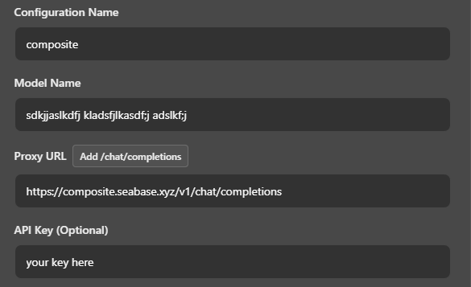

Engine:
wondering how to use? click here
first, you'll need to set your API key in janitor to your key
cool, you got your key, fantastic. now place it in the api key field
it doesn't matter what you put as the model name, so just put whatever you want, Janitor will freak out if you put nothing
now, set your "Proxy URL" to https://composite.seabase.xyz/v1/chat/completions
at the end of it, your configuration should look like this:
if you are getting a fetch error after intially setting the proxy to composite, try refreshing janitor.ai
its a known issue that deepseek, gemini and other popular models are unstable in the G4F providers
if you absolutely crave a guaranteed response, use webllm
is it not streaming? cool, can't fix that. pray or use webllm or pollinations ( non g4f )
Q: Do you collect data?
A: no. not unless you choose to donate data
Q: Is KiwiAI goated?
A: yes
Q: Is Composite open-source?
A: yes, check out the github
Q: Whats the rate limit or message limit per day?
A: none
Q: Should I use G4F or WebLLM
A: webllm. unless you really want deepseek and gemini THAT bad
Q: Does Composite work for other sites?
A: it should work for any site that supports an openai compatable api
Q: It's not responding, what do I do?
A: try another provider or another model, or just try WebLLM for a guaranteed experience
Q: How does lorebary lorebook and plugin integration work?
A: we exploit a vulnerability within the "secure" site to get access to public and private plugins/lorebooks. we've reported the vulnerability but sophia caused a banwave so we don't think she'll actually fix anything
Q: In the Discord, why does it say that you can break into my home and steal my dog if I use composite?
A: cause, i wanna pet your dog. deal with it
Q: What's the best quote known to man
A: "Damn Jamie, are you pregnant? Cause you keep delivering"
Test your model through the backend endpoint
Status: Ready
Huggingface.co
backend
pollinations
g4f
browser:
memory:
lorebook cors bypass made possible by using tomphttp bare server